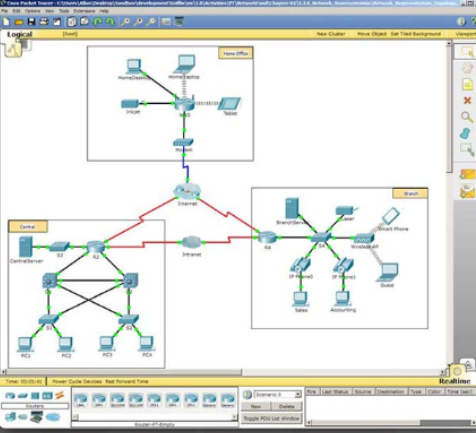

Welcome to the CCNA Routing and Switching Essentials couser. The goal of this course is to introudce you to fundamental networking concepts and technologies. These online course materials will assist you in developing the skills necessary to plan and implement small networks supporting a range of applications. The specific skills covered in each chapter are described at the start of each chapter.
Introduction CCNA 2.
Welcome to the CCNA Routing and Switching Essentials couser. The goal of this course is to introudce you to fundamental
networking concepts and technologies. These online course materials will assist you in developing the skills necessary to plan
and implement small networks supporting a range of applications. The specific skills covered in each chapter are described at
the start of each chapter.
You can your small phone, tablet, laptop or desktop to access the course, participate in discussions with your instructor, view your grades,
read or review text, and practice using interactive media. However, some media are complex and must be viewed on a PC, as well as Packet Tracer activities,
quizzez and exams.
When you participe in the Networking Academy, you are joining a global community linked by common goals and technologies. Schools, collages, universities and
other entutues in over 160 countries participate in the program. A visualization of the global Networking Academy community is available at https://www.netacad.com/
Look for Cisco Networking Academy official site on Facebook © and Linkedln©. The Facebook site is where you can meet and engage with other Networking Academy
students from around the world. The Cisco Networking Academy Linkedln site connects you with job posting, and you can see how other are effectively communicating their skills.
The netAcad learning environment is an important part of the overall course experience for students and instructors in the Networking Academy. These online course materials include course text and related interactive media,
Packet Tracer simulation activities, real equipments labs, remote access labs, and many different types of quizzes. All of these materials provide important feedback to help you assess your progress throughout the course.
The material in this course encompasses a broad range of technologies that facilitate how people work, live, play and learn by communicating with voice, video and other data. Networking and the Internet addect people differently
in different parts of the world.Althoung we have worked with instructors from around the world to create these materials, it's important that you work with your instructor and fellow students to make the material in this course applicable
to your local environment.
E-doing is a design philosophy that appllies the principle that people learn best by doing. The curricum includes embedded, higly interactive e-doing activities to help simulate learning, increase knowledge retention and make the whole learning experience richer - and that makes understanding the content much easier.
In a typical lesson, after learning about a topic for the first time, you will check your understanding with some interactive media items. If there are new commands to learn, you will ractice them with the Syntax Checker before using the commands
to configure or troubleshoot a network in Packet Tracer, the Networking Academy network simulation tool. Next, you will do practice activities on the real equipment in your in your classroom or accessed remotely over the Internet.
Packet Tracer can also provide additional practice any time by creating your own activities or many want to competitively test your skills with classmates in multi-user games. Packet Tracer skills assessment and skills integration labs give you rich
feedback on the skills you are able to demonstrate and are grat practice for chapter, checkpoint and final exams.
Professionals in the networking field often keep Engineering Journals in which they write down the things they observe and learn such as how to use protocols and commands. Keeping an Engineering Jorunal creates a reference you can use at wirk in your ICT job.
Writing is one way to reinforce your learning - along with reading, seeing and practicing.
A sample entry for implementing a technology could include the necessary software commands, the purpose od the commands, command variable and a topology diagram indicating the context for using the commands to configure the technology.
Packet Tracer is a networking tool for learning that support a wide range of physical and logical simulations. It also provides visualization tools to help you understand the internal workings of a network.
The pre-built Packet Tracer activities consist of network simulations, games, activities and challenges that provide a broad range of learning experiences. These tools will help you develop an understanding of how data flows in a network.
You can also use Packet Tracer to create your own experiments and networkings scenarios. We hope that, over time, you consider using Packet Tracer - not only for experiencing the pre-built activities, but also to become an author, explorer, and experimenter.
The online course materials have embedded Packet Tracer activities that will launch on computers running Windows® Operating Systems, if Packet Tracer is installed. This integrations will also work on other operating system using Windows emulation.

As the course title states, the focus of this course is on learning the architecture, components and operations of routers and switches in a small network. In this course, youwill learn how to configure a router and a switch for basic functionality. You will do the following.